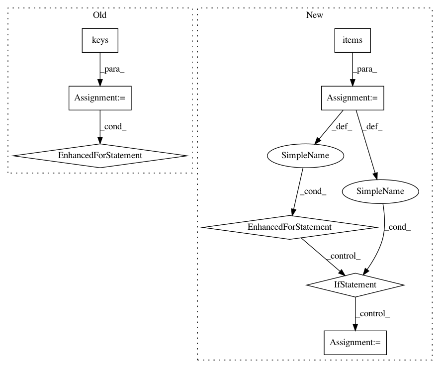

ae9c9c836891a10d221691df266d754b6557c644,allennlp/semparse/worlds/text2sql_world.py,Text2SqlWorld,get_action_sequence_and_all_actions,#Text2SqlWorld#Any#Any#,54
Before Change
raise ConfigurationError("The Text2SqlWorld was specified to not use prelinked "
"entities, but prelinked entities were passed.")
prelinked_entities = prelinked_entities or {}
for token in prelinked_entities.keys():
grammar_with_context["value"] = [f""\"{token}\"""] + grammar_with_context["value"]
grammar = Grammar(format_grammar_string(grammar_with_context))
valid_actions = initialize_valid_actions(grammar)
all_actions = set()
After Change
prelinked_entities = prelinked_entities or {}
for variable, info in prelinked_entities.items():
variable_column = info["type"].upper()
matched_column = self.columns.get(variable_column, None)
if matched_column is not None:
// Try to infer the variable"s type by matching it to a column in
// the database. If we can"t, we just add it as a value.
if column_has_numeric_type(matched_column):
grammar_with_context["number"] = [f""\"{variable}\"""] + grammar_with_context["number"]
elif column_has_string_type(matched_column):
grammar_with_context["string"] = [f""\"{variable}\"""] + grammar_with_context["string"]
else:
grammar_with_context["value"] = [f""\"{variable}\"""] + grammar_with_context["value"]
// Otherwise, try to infer by looking at the actual value:
else:
try:
// This is what happens if you try and do type inference
// in a grammar which parses _strings_ in _Python_.
// We"re just seeing if the python interpreter can convert
// to to a float - if it can, we assume it"s a number.
float(info["text"])
is_numeric = True
except ValueError:
is_numeric = False
if is_numeric:
grammar_with_context["number"] = [f""\"{variable}\"""] + grammar_with_context["number"]
elif info["text"].replace(" ", "").isalpha():
grammar_with_context["string"] = [f""\"{variable}\"""] + grammar_with_context["string"]
else:
grammar_with_context["value"] = [f""\"{variable}\"""] + grammar_with_context["value"]
grammar = Grammar(format_grammar_string(grammar_with_context))
valid_actions = initialize_valid_actions(grammar)
all_actions = set()
In pattern: SUPERPATTERN
Frequency: 3
Non-data size: 8
Instances
Project Name: allenai/allennlp
Commit Name: ae9c9c836891a10d221691df266d754b6557c644
Time: 2018-10-11
Author: markn@allenai.org
File Name: allennlp/semparse/worlds/text2sql_world.py
Class Name: Text2SqlWorld
Method Name: get_action_sequence_and_all_actions
Project Name: ray-project/ray
Commit Name: 1d532d1cb8b829bdf7055a22c206032ca0b72e46
Time: 2020-04-02
Author: rkooo567@gmail.com
File Name: python/ray/dashboard/metrics_exporter/schema.py
Class Name: BaseModel
Method Name: parse_obj
Project Name: osmr/imgclsmob
Commit Name: 7cda122d9636cdfe8dab5c745b3fa4d30ab57cc9
Time: 2018-12-11
Author: osemery@gmail.com
File Name: gluon/utils.py
Class Name:
Method Name: prepare_model